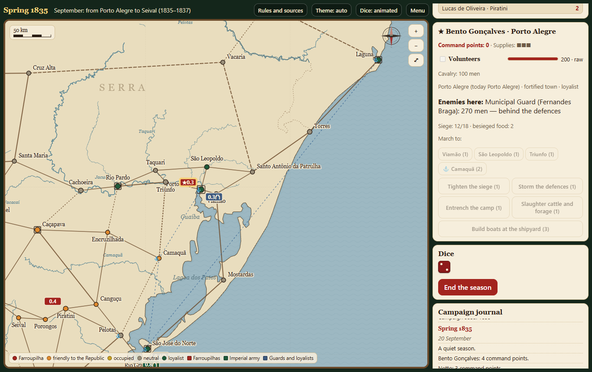

O jogo
Em A Revolução Farroupilha você comanda as colunas republicanas no Rio Grande do Sul, de setembro de 1835 até a paz de 1845. É um jogo de tabuleiro com dados, jogado contra os imperiais, que agem pelas regras e seguem o calendário das fontes: os exércitos, os chefes e as datas de cada evento vêm de artigos sobre a guerra e sobre cada combate. [1]

A guerra em resumo
A Revolução Farroupilha, também chamada Guerra dos Farrapos, durou de 20 de setembro de 1835 a 1º de março de 1845. [2] [3] Começou com a tomada de Porto Alegre por Bento Gonçalves, Gomes Jardim e Onofre Pires, com cerca de 200 a 300 homens; as fontes divergem no número. [4] Em 15 de junho de 1836, Manuel Marques de Sousa retomou a cidade, que ficou com o Império até o fim. [5] [3]
Em 10 de setembro de 1836, Antônio de Sousa Netto venceu no arroio Seival e, no dia seguinte, proclamou a República Rio-Grandense. [6] A República teve quatro capitais oficiais, Piratini, Caçapava do Sul, Alegrete e São Gabriel, e por pouco tempo também Bagé e São Borja. [15] Em outubro de 1836, Bento Gonçalves foi cercado na ilha do Fanfa e preso; fugiu em 1837 do Forte de São Marcelo, na Bahia. [7] O corpo dos Lanceiros Negros foi criado em 12 de setembro de 1836. [16]
| Data | Combate | Forças, segundo as fontes | Resultado |
|---|---|---|---|
| 10/09/1836 | Seival [6] | 400 a 430 republicanos contra 500 a 560 | vitória republicana |
| 3–4/10/1836 | Ilha do Fanfa [7] | 1.100 contra 1.000 e uma flotilha | vitória imperial; Bento Gonçalves preso |
| 30/04/1838 | Rio Pardo (Barro Vermelho) [8] | cerca de 5.000 no total; o artigo em inglês dá 2.800 contra 1.546 | vitória republicana |
| 22/07/1839 | Tomada de Laguna [9] | cerca de 1.000 de cada lado | vitória republicana; República Juliana |
| 14/12/1839 | Santa Vitória [10] | 500 contra 2.000 | vitória republicana |
| 03/05/1840 | Taquari [11] | 3.360 contra 4.300 | indeciso |
| 16/07/1840 | São José do Norte [12] | 1.200 contra 599, depois reforçados | vitória imperial |
| 26/05/1843 | Ponche Verde [13] | 2.800 contra 1.425 | indefinido; os dois lados proclamaram vitória |
| 14/11/1844 | Porongos [14] | números muito divergentes | vitória imperial, de surpresa |
Laguna voltou ao Império quatro meses depois de tomada. Em 1842, o barão de Caxias assumiu a presidência e o comando da província. A paz de Ponche Verde deu anistia geral, incorporou os oficiais republicanos ao exército imperial, deixou aos republicanos a escolha do novo presidente da província e criou uma taxa de 25% sobre o charque importado. [3] O artigo sobre Porongos acrescenta a liberdade dos escravizados que lutaram e registra que a culpa de Canabarro na surpresa é discutida até hoje. [14]
↑ Voltar ao topoA tela
No alto ficam a data, o cenário e os botões Regras e fontes, Tema, Dados (animados ou rápidos) e Menu. O mapa ocupa o centro: arraste para mover e use a roda do mouse ou os botões + e − para aproximar. O litoral, a Lagoa Mirim e as fronteiras vêm do Natural Earth, e os rios, do OpenStreetMap. [17] [18]
- Vilas: a cor diz a situação: vermelho farroupilha, laranja simpática à República, amarelo ocupada, cinza neutra, verde legalista. O quadrado em volta marca as vilas fortificadas, e a âncora, os portos.
- Marcadores: o número é o efetivo em milhares. Os vermelhos são as suas colunas, e a ★ marca a de Bento Gonçalves. Os verdes são o exército imperial; os azuis, guardas e legalistas. O símbolo ⛫ indica uma força atrás das trincheiras.
- Estradas: a linha marrom tracejada é a subida da serra; a marrom pontilhada atravessa um rio grande; a azul tracejada atravessa a lagoa ou o mar. O número de cada destino, no painel, é o custo da marcha.
- Painel: Glória, Adesão e soldados no topo; a lista das colunas com os pontos de comando que restam; o painel da coluna escolhida, com unidades, cavalaria, víveres, destinos e ordens; os dados da última rolagem; o botão Encerrar a estação; e o diário da campanha.
No teclado, Tab percorre vilas e colunas, Enter seleciona ou marcha e E encerra a estação.
↑ Voltar ao topoUma estação
![Cada estação tem cinco etapas: 1, Sorte: um dado decide chuvas, gado, vaqueanos ou adesões; 2, Comando: cada coluna rola um dado, Bento Gonçalves recebe 3 mais metade do dado e os outros chefes 1 mais metade; 3, Ordens: marchar, cercar, atacar, entrincheirar, buscar víveres, juntar balsas ou construir lanchões; 4, Imperiais: as forças imperiais se movem e atacam; 5, Víveres: em terra amiga a coluna se abastece, fora dela perde 1. O ano de campanha tem primavera, verão e outono, e termina no inverno, passado nas estâncias, quando se recuperam esquadrões e se gasta Adesão em reforços.](rc_images/RevolucaoFarroupilhaEstacao.svg)
O ano de campanha começa na primavera, em setembro, como a própria revolução. Por isso o jogo mostra “Verão de 1835–1836”: o verão atravessa a virada do ano. Em cada estação, gaste os pontos de comando de cada coluna: marchar custa o número da estrada, e cada ordem custa o número entre parênteses no botão. Quando terminar, clique em Encerrar a estação: os imperiais se movem, os víveres são contados e começa a estação seguinte.
No inverno não se marcha. As colunas em terra amiga recuperam um esquadrão por unidade, as unidades que venceram podem virar veteranas e você gasta Adesão para completar unidades (1 ponto) ou receber um corpo novo de voluntários (3 pontos) na capital. Se a Adesão cair abaixo de −3, a tropa se dispersa e a campanha acaba.
↑ Voltar ao topoO combate
Entrar onde há uma força inimiga em campo abre o combate. Cada lado vale pontos: 20 infantes valem 1 ponto (veteranos 1,35; elite 1,7) e 40 cavaleiros valem 1. Do lado imperial, 1.000 milicianos valem 30 pontos vezes a qualidade, e 1.000 soldados de linha, 50. Cada lado rola um dado para cada 7 pontos, mais os modificadores: terreno, trincheiras, acampamento entrincheirado, cavalaria superior, artilharia, canhoneiras nos rios e Bento Gonçalves à frente da tropa.

Tropas veteranas acertam com 4, 5 ou 6; novatos e a maioria dos imperiais, só com 5 ou 6. Cada acerto tira 3 pontos do outro lado. Depois de cada rodada, quem sofreu mais rola dois dados de moral: se a soma passar do valor de moral, foge e ainda sofre a perseguição da cavalaria. São no máximo três rodadas; se ninguém foge, é empate.
Na surpresa, a primeira rodada é de quem ataca: ele rola dados a mais e acerta com 4 a 6, e o surpreendido só acerta com 6 e tem moral 2 menor. Se a coluna de Bento Gonçalves foge, ele pode cair preso, com chance de 1 em 12. A coluna mais forte assume o comando, mas a ★ deixa de dar o bônus de Bento.
↑ Voltar ao topoCercos, rios e lagoa
Cercar
Uma guarnição atrás das trincheiras precisa ser cercada. Cada ordem de cerco soma um dado, mais metade das unidades da coluna e mais 2 com Bento Gonçalves. A vila cai quando o cerco chega a 6 vezes a fortificação: 18 em Porto Alegre. A cada estação os sitiados comem os víveres e, sem eles, rendem-se.
Assaltar
O assalto é um combate em que o defensor ganha a fortificação mais 1 em dados. É mais rápido, mas costuma custar caro.
Vilas abastecidas pela água
Depois de retomada pelo Império, Porto Alegre se abastece pelo Guaíba, como Rio Grande e São José do Norte: só uma coluna com lanchões consegue cercá-las. Os lanchões são construídos no estaleiro do Camaquã. O artigo em português sobre a guerra fala desse estaleiro na seção sobre a marinha farroupilha. [2]
Rios e lagoa
Para atravessar o Jacuí, o Camaquã ou o Pelotas, junte balsas numa das margens (2 pontos). A Lagoa dos Patos só se atravessa entre portos, e enquanto Rio Grande for imperial a esquadra barra metade das tentativas: num 1 a coluna perde homens e volta; num 2 ou 3, só volta.
Os três cenários
| Cenário | Colunas no início | Eventos | Objetivo |
|---|---|---|---|
| Setembro (1835–1837) | Bento Gonçalves 300, Netto 400, Lucas de Oliveira 400 | 20 de setembro, o governo legal, a retomada de Porto Alegre, o Seival, o Fanfa | vencer no Seival e terminar com Bento Gonçalves livre |
| A República (1837–1840) | Bento Gonçalves 1.800, Netto 700, Bento Manuel 600 | a volta de Bento, Rio Pardo, a expedição a Laguna, a retomada de Laguna, Santa Vitória, Taquari, São José do Norte | tomar Rio Pardo e Laguna, com Bento Gonçalves livre |
| Caxias e a paz (1842–1845) | Bento Gonçalves 1.800, Canabarro 1.100, Netto 600 | Caxias, Ponche Verde, Porongos, a paz | chegar à paz com Bento livre e ao menos 2.000 homens |
Os efetivos acompanham as fontes quando elas dão números: no terceiro cenário, os 3.500 republicanos e os 11.500 a 12.000 imperiais que o quadro do artigo em português dá para 1842. [2] A divisão em unidades e as guarnições das vilas são estimativas do jogo. Bento Manuel começa o segundo cenário do lado republicano porque lutou com Bento Gonçalves em Rio Pardo, e no terceiro está de novo com o Império, como em Ponche Verde. [8] [13]
↑ Voltar ao topoAs batalhas no modelo
Para conferir o equilíbrio, cada combate histórico foi simulado 2.000 vezes com a própria função de combate do jogo e as forças dadas pelas fontes. O resultado é o que o modelo do jogo faz com aqueles números, não a chance real que cada lado tinha.
![Batalhas históricas simuladas no jogo. Seival, 1836: vitória 54%, empate 36%, derrota 10%; na história: vitória. Fanfa, 1836 (defendendo): vitória 10%, empate 27%, derrota 64%; na história: derrota. Rio Pardo, 1838: vitória 34%, empate 49%, derrota 17%; na história: vitória. Santa Vitória, 1839: vitória 13%, empate 12%, derrota 75%; na história: vitória. Taquari, 1840: vitória 3%, empate 60%, derrota 37%; na história: indeciso. São José do Norte, 1840: vitória 18%, empate 34%, derrota 48%; na história: derrota. Ponche Verde, 1843: vitória 92%, empate 7%, derrota 1%; na história: disputado. Porongos, 1844: saindo: vitória 45%, empate 14%, derrota 41%; na história: derrota. Porongos, 1844: acampado: vitória 100%, empate 0%, derrota 0%; na história: —. 2.000 combates por linha, com a função de combate do jogo e as forças das fontes. É o modelo do jogo, não a probabilidade real.](rc_images/RevolucaoFarroupilhaBatalhas.svg)
O modelo reproduz bem o Fanfa, Taquari e São José do Norte. Santa Vitória não: com 500 contra 2.000, o jogo dá derrota em 75% das vezes, e na história os republicanos venceram. Em Porongos, a decisão pesa mais que os números: sair ao encontro de Moringue arrisca a surpresa, e ficar no acampamento com sentinelas dobradas quase sempre segura o ataque.
↑ Voltar ao topoEstratégias
Cerque antes de assaltar
Com tempo, o cerco toma a vila sem combate. O assalto dá ao defensor a fortificação mais 1 em dados.
Entrincheire antes de encerrar
Uma coluna com acampamento entrincheirado ganha 3 dados quando é atacada. Use o último ponto da estação nisso.
Junte as colunas
Duas colunas na mesma vila podem se unir. Os imperiais atacam quem parece fraco, e colunas pequenas viram alvo.
Cuidado com os rios
As forças com flotilha ganham 2 dados nas vilas de rio: Porto Alegre, Triunfo, Taquari, Rio Pardo, Cachoeira, Camaquã e Pelotas. Foi num rio que Bento Gonçalves caiu preso.
Instale a capital
Bento Gonçalves pode instalar a capital em Piratini, Caçapava, Alegrete ou São Gabriel: rende Glória, e os voluntários do inverno chegam ali.
Inverne em casa
No inverno, quem está em terra amiga recupera esquadrões; quem está fora perde.
Primeira campanha passo a passo
Com a mesma semente, os dados saem iguais. Siga estes passos com a semente 1835 e a dificuldade padrão, Peão.
- Abra o jogo, escolha Setembro: de Porto Alegre ao Seival, digite
1835em Semente e clique em Começar a campanha. - Leia o evento 20 de setembro e clique em Continuar. É a primavera de 1835: Bento Gonçalves tem 4 pontos de comando, Netto 3 e Lucas de Oliveira 2.
- Com a coluna de Bento Gonçalves selecionada, em Viamão, clique em Porto Alegre (1). Sobram 3 pontos.
- Clique três vezes em Apertar o cerco (1). O diário mostra +5, +3 e +4, e o painel, Cerco: 12/18, como na primeira figura.
- Escolha Netto e clique em Entrincheirar o acampamento (1). Escolha Lucas de Oliveira e marche para Canguçu (1).
- Clique em Encerrar a estação. No verão de 1835–1836, Bento Gonçalves tem 6 pontos. Aperte o cerco mais uma vez: +8, e Porto Alegre cai, com 270 prisioneiros. A Glória vai a 6.
- Encerre a estação. No outono de 1836, o evento O governo legal se reorganiza põe um exército legal de 1.100 homens em Pelotas, vizinha de Canguçu. Se você deixar Lucas de Oliveira ali, no fim do outono ele é atacado e a coluna se desfaz, como na figura do combate. Tire-o de Canguçu ou junte-o a Netto.
- Deixe Bento Gonçalves em Porto Alegre até o inverno: com uma coluna dentro da cidade, o levante de junho de 1836 não acontece.
Erros comuns
Assaltar Porto Alegre logo de cara
Bento começa com 300 homens, e a guarnição atrás das trincheiras ganha 4 dados. O cerco toma a cidade em duas estações.
Ficar só com cavalaria
Uma coluna que perde a última unidade deixa de existir, mesmo que ainda tenha cavaleiros.
Procurar o botão de marcha do outro lado do rio
Sem balsas, o destino do outro lado do Jacuí, do Camaquã ou do Pelotas não aparece entre as estradas.
Cercar Porto Alegre retomada sem lanchões
Depois de junho de 1836, a cidade se abastece pela água, e o cerco não avança sem lanchões.
Gastar toda a Adesão
Abaixo de −3, a campanha termina. As derrotas e os saques de gado também tiram Adesão.
Para fixar
- O ano começa na primavera; o inverno é só para recuperar e reforçar.
- Um dado a cada 7 pontos; veteranos acertam com 4, novatos com 5.
- O cerco precisa chegar a 6 vezes a fortificação.
- Rio grande pede balsas; lagoa pede porto; mar pede lanchões.
- Na surpresa, a primeira rodada é de quem ataca.
Revisão rápida
Tente responder antes de abrir cada pergunta.
1. Em que estação começa o ano de campanha?
Na primavera, de setembro a novembro. O verão atravessa a virada do ano, e o inverno vai de junho a agosto.
2. Quanto o cerco precisa somar para tomar Porto Alegre?
18, isto é, 6 vezes a fortificação 3 da cidade.
3. O que acontece se a coluna de Bento Gonçalves fugir de um combate?
Com chance de 1 em 12, ele cai preso. A coluna mais forte assume o comando; sem outra coluna, a revolta acaba.
4. Por que não dá para cercar Rio Grande com qualquer coluna?
Porque a vila se abastece pela água. Só uma coluna com lanchões, construídos no estaleiro do Camaquã, consegue cercá-la.
5. Moringue se aproxima e a coluna está acampada. O que é mais seguro?
Ficar no acampamento com sentinelas dobradas. Sair ao encontro dele dá a Moringue a primeira rodada da surpresa.
Referências
- Giovani Perotto Mesquita, “A Revolução Farroupilha”, jogo em um único arquivo HTML, giovanipm.github.io/RevolucaoFarroupilha.html. As regras, as forças dos cenários e as simulações deste tutorial vêm do código do jogo.
- Wikipédia, “Guerra dos Farrapos” (aberto por “Revolução Farroupilha”), acesso em 21/11/2026, pt.wikipedia.org/wiki/Revolução_Farroupilha.
- Wikipedia (em inglês), “Ragamuffin War”, acesso em 21/11/2026, en.wikipedia.org/wiki/Ragamuffin_War.
- Wikipédia, “Tomada de Porto Alegre”, acesso em 21/11/2026, pt.wikipedia.org/wiki/Tomada_de_Porto_Alegre. O artigo em inglês, “Capture of Porto Alegre”, dá cerca de 300 rebeldes.
- Wikipedia (em inglês), “Recapture of Porto Alegre”, acesso em 21/11/2026, en.wikipedia.org/wiki/Recapture_of_Porto_Alegre.
- Wikipédia, “Batalha do Seival”, acesso em 21/11/2026, pt.wikipedia.org/wiki/Batalha_do_Seival. As baixas variam muito entre este artigo e o artigo em inglês, “Battle of Seival”.
- Wikipédia, “Batalha da Ilha do Fanfa”, acesso em 21/11/2026, pt.wikipedia.org/wiki/Batalha_da_Ilha_do_Fanfa; e “Battle of Fanfa”, na Wikipedia em inglês.
- Wikipédia, “Batalha do Barro Vermelho”, acesso em 21/11/2026, pt.wikipedia.org/wiki/Batalha_do_Barro_Vermelho; os números de 2.800 e 1.546 vêm de “Battle of Barro Vermelho”, na Wikipedia em inglês.
- Wikipédia, “Tomada de Laguna”, acesso em 21/11/2026, pt.wikipedia.org/wiki/Tomada_de_Laguna. O artigo chama o comandante imperial ora de Vilas Boas, ora de Vilas Lobos.
- Wikipedia (em inglês), “Battle of Santa Vitória”, acesso em 21/11/2026, en.wikipedia.org/wiki/Battle_of_Santa_Vitória.
- Wikipedia (em inglês), “Battle of Taquari”, acesso em 21/11/2026, en.wikipedia.org/wiki/Battle_of_Taquari.
- Wikipedia (em inglês), “Battle of São José do Norte”, acesso em 21/11/2026, en.wikipedia.org/wiki/Battle_of_São_José_do_Norte.
- Wikipédia, “Batalha do Ponche Verde”, acesso em 21/11/2026, pt.wikipedia.org/wiki/Batalha_do_Ponche_Verde. O artigo registra que Hartmann conta a batalha como vitória republicana.
- Wikipédia, “Massacre de Porongos”, acesso em 21/11/2026, pt.wikipedia.org/wiki/Massacre_de_Porongos. O quadro do artigo dá 150 lanceiros e 260 imperiais; o texto, mais de 1.200 republicanos e mais de 1.100 imperiais.
- Wikipédia, “República Rio-Grandense”, acesso em 21/11/2026, pt.wikipedia.org/wiki/República_Rio-Grandense.
- Wikipédia, “Lanceiros Negros”, acesso em 21/11/2026, pt.wikipedia.org/wiki/Lanceiros_Negros.
- Natural Earth, terra, lagos e fronteiras na escala 1:10m, domínio público, naturalearthdata.com. As fronteiras desenhadas são as de hoje.
- OpenStreetMap, rios do Rio Grande do Sul, © colaboradores do OpenStreetMap, licença ODbL, openstreetmap.org/copyright.

![Each season has five steps: 1, Fortune: one die decides rain, cattle, guides or new supporters; 2, Command: each column rolls a die, Bento Gonçalves gets 3 plus half the die and other leaders 1 plus half; 3, Orders: march, besiege, attack, entrench, forage, gather rafts or build boats; 4, Imperials: the imperial forces move and attack; 5, Supplies: on friendly ground a column resupplies, elsewhere it loses 1. The campaign year has spring, summer and autumn, and ends in winter, spent on the ranches, when squadrons recover and Support is spent on reinforcements.](rc_images/RevolucaoFarroupilhaEstacao-en.svg)
![Historical battles simulated in the game. Seival, 1836: victory 54%, draw 36%, defeat 10%; in history: victory. Fanfa, 1836 (defending): victory 10%, draw 27%, defeat 64%; in history: defeat. Rio Pardo, 1838: victory 34%, draw 49%, defeat 17%; in history: victory. Santa Vitória, 1839: victory 13%, draw 12%, defeat 75%; in history: victory. Taquari, 1840: victory 3%, draw 60%, defeat 37%; in history: indecisive. São José do Norte, 1840: victory 18%, draw 34%, defeat 48%; in history: defeat. Ponche Verde, 1843: victory 92%, draw 7%, defeat 1%; in history: disputed. Porongos, 1844: riding out: victory 45%, draw 14%, defeat 41%; in history: defeat. Porongos, 1844: in camp: victory 100%, draw 0%, defeat 0%; in history: —. 2,000 battles per row, using the game’s battle function and the forces from the sources. It is the game’s model, not the real probability.](rc_images/RevolucaoFarroupilhaBatalhas-en.svg)
![Ogni stagione ha cinque fasi: 1, Sorte: un dado decide piogge, bestiame, guide o adesioni; 2, Comando: ogni colonna tira un dado, Bento Gonçalves riceve 3 più metà del dado e gli altri capi 1 più metà; 3, Ordini: marciare, assediare, attaccare, trincerarsi, cercare viveri, radunare zattere o costruire lance; 4, Imperiali: le forze imperiali si muovono e attaccano; 5, Viveri: in terra amica la colonna si rifornisce, altrove perde 1. L’anno di campagna ha primavera, estate e autunno, e finisce in inverno, passato nelle estancias, quando si recuperano squadroni e si spende Adesione in rinforzi.](rc_images/RevolucaoFarroupilhaEstacao-it.svg)
![Battaglie storiche simulate nel gioco. Seival, 1836: vittoria 54%, pareggio 36%, sconfitta 10%; nella storia: vittoria. Fanfa, 1836 (in difesa): vittoria 10%, pareggio 27%, sconfitta 64%; nella storia: sconfitta. Rio Pardo, 1838: vittoria 34%, pareggio 49%, sconfitta 17%; nella storia: vittoria. Santa Vitória, 1839: vittoria 13%, pareggio 12%, sconfitta 75%; nella storia: vittoria. Taquari, 1840: vittoria 3%, pareggio 60%, sconfitta 37%; nella storia: incerto. São José do Norte, 1840: vittoria 18%, pareggio 34%, sconfitta 48%; nella storia: sconfitta. Ponche Verde, 1843: vittoria 92%, pareggio 7%, sconfitta 1%; nella storia: discusso. Porongos, 1844: uscendo: vittoria 45%, pareggio 14%, sconfitta 41%; nella storia: sconfitta. Porongos, 1844: nel campo: vittoria 100%, pareggio 0%, sconfitta 0%; nella storia: —. 2.000 combattimenti per riga, con la funzione di combattimento del gioco e le forze delle fonti. È il modello del gioco, non la probabilità reale.](rc_images/RevolucaoFarroupilhaBatalhas-it.svg)
![Cada estación tiene cinco etapas: 1, Suerte: un dado decide lluvias, ganado, baqueanos o adhesiones; 2, Mando: cada columna tira un dado, Bento Gonçalves recibe 3 más la mitad del dado y los demás jefes 1 más la mitad; 3, Órdenes: marchar, sitiar, atacar, atrincherarse, buscar víveres, juntar balsas o construir lanchas; 4, Imperiales: las fuerzas imperiales se mueven y atacan; 5, Víveres: en tierra amiga la columna se abastece, fuera de ella pierde 1. El año de campaña tiene primavera, verano y otoño, y termina en invierno, pasado en las estancias, cuando se recuperan escuadrones y se gasta Adhesión en refuerzos.](rc_images/RevolucaoFarroupilhaEstacao-es.svg)
![Batallas históricas simuladas en el juego. Seival, 1836: victoria 54%, empate 36%, derrota 10%; en la historia: victoria. Fanfa, 1836 (defendiendo): victoria 10%, empate 27%, derrota 64%; en la historia: derrota. Rio Pardo, 1838: victoria 34%, empate 49%, derrota 17%; en la historia: victoria. Santa Vitória, 1839: victoria 13%, empate 12%, derrota 75%; en la historia: victoria. Taquari, 1840: victoria 3%, empate 60%, derrota 37%; en la historia: indecisa. São José do Norte, 1840: victoria 18%, empate 34%, derrota 48%; en la historia: derrota. Ponche Verde, 1843: victoria 92%, empate 7%, derrota 1%; en la historia: discutida. Porongos, 1844: saliendo: victoria 45%, empate 14%, derrota 41%; en la historia: derrota. Porongos, 1844: acampado: victoria 100%, empate 0%, derrota 0%; en la historia: —. 2.000 combates por fila, con la función de combate del juego y las fuerzas de las fuentes. Es el modelo del juego, no la probabilidad real.](rc_images/RevolucaoFarroupilhaBatalhas-es.svg)